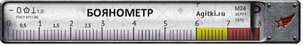

Есть несколько версий происхождения данного термина, приведу свою любимую.
Есть несколько версий происхождения данного термина, приведу свою любимую.
Был во время Русско-Японской войны (1904-05 гг, кто забыл) в составе Российского флота полуброненосный крейсер «Баян». В общем, он проявил себя в боях неплохо, но чем кончилась сама война для России — известно. Сам «Баян» и почти вся 1-я Тихоокеанская эскадра были в конце концов затоплены в Порт-Артуре. 2-я Тихоокеанская в это время плыла вокруг шарика навстречу Цусиме. В Петербурге, конечно, понимали, что флоту требуется пополнение (в том числе крейсеры), но вот незадача — нормального современного проекта на тот момент (начало 1905 года) просто не было. Решили, чтобы не терять времени, заказать три крейсера по образу и подобию недавно утопшего «Баяна». Но строительство шло медленно, а после окончания войны и вообще заглохло. В результате долгострой длился 6-7 лет, и крейсера вошли в строй только в 1911-12 годах. Надо ли говорить, что к тому времени они уже безнадежно устарели… И бывшие артурцы, увидев через 7 лет в Кронштадте до боли знакомый силуэт старого крейсера, не могли удержаться от восклицания: — Аххренеть, это ж «Баян»! Старый баянище!!! 
Ниже приведён список самых запомнившихся баянов - отвратительных и не очень. Удачи! Она вам пригодится.


Как вы видите, баянчики как правило представляют из себя тупую пикчу с надписью шрифтом Impact. Баянами обычно становятся раковые мемы.